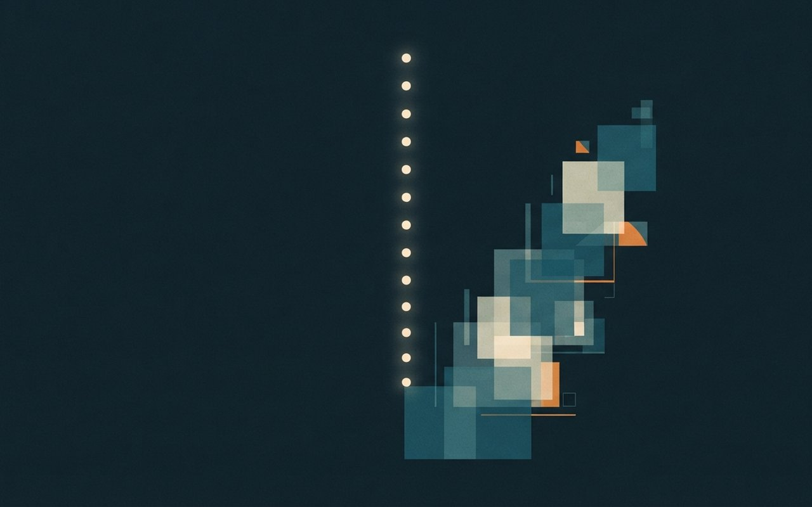
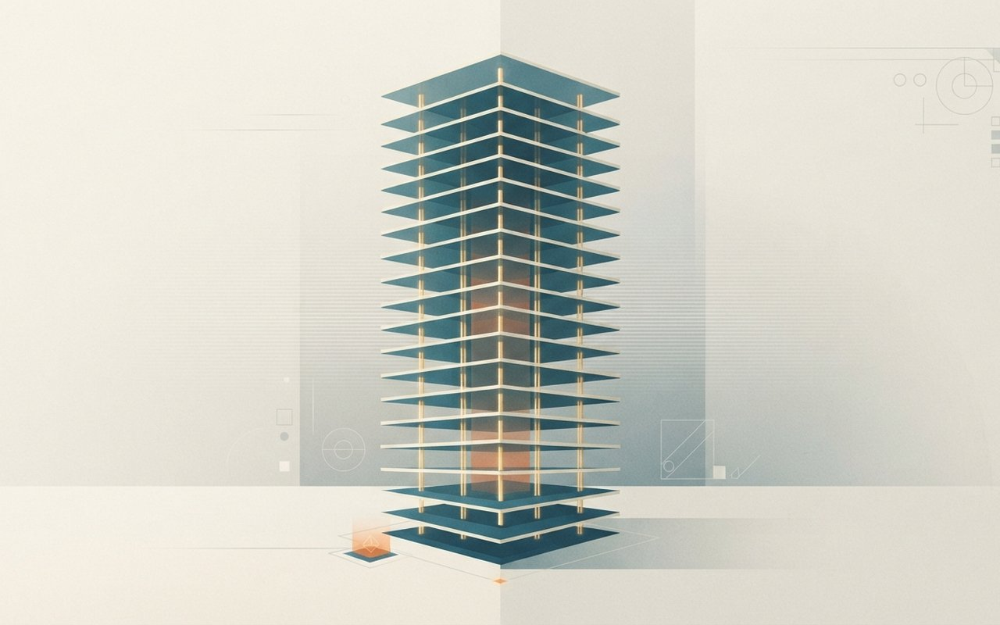
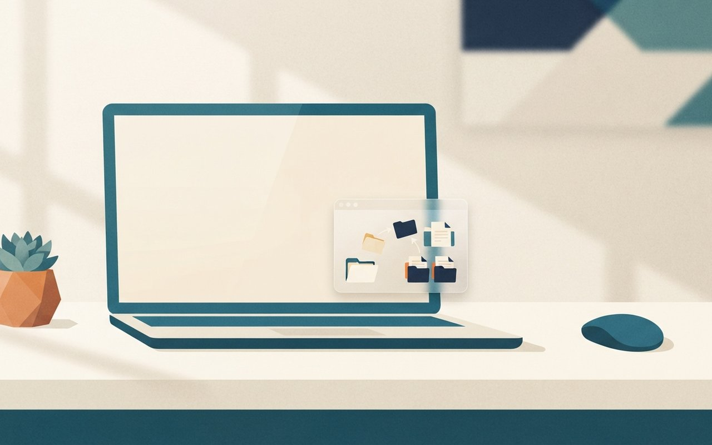

🎧 낭독 원고 보기
11월 23일 월요일, AI 브리프입니다. 지난 한 주 쌓인 테크 소식 다섯 가지를 전해 드립니다.
1859년에 나온 수학 난제, 리만 가설을 AI와 함께 풀었다는 주장이 나왔습니다. 앤트로픽 소속 수학자 레벤트 알푀게는 클로드와 함께 증명을 찾았다며 성명과 코드를 공개했습니다. 이 증명은 형식 검증 언어 Lean으로 컴파일됐고, MIT의 앤드루 서덜랜드도 따로 확인했습니다. 다만 사람이 읽고 이해할 설명은 아직 없다고 알푀게 스스로 밝혔습니다. 같은 날 스탠퍼드에서는 AI 없이 쓴 일반화된 리만 가설 증명 초안도 공개됐습니다.
고대역폭메모리 값이 더 오릅니다. 시장조사업체 트렌드포스는 HBM4의 기가비트당 가격이 올해 2.05달러 이상에서 내년 3달러에서 5.5달러로 오를 것으로 봤습니다. 상단이면 2.7배, 하단이면 1.5배쯤입니다. HBM 전체 평균값은 1.67달러에서 3.7달러로 122퍼센트 오를 전망입니다. 엔비디아의 HBM 수요 비중은 55퍼센트에서 42퍼센트로 줄고, 구글은 22퍼센트에서 31퍼센트로 늘어납니다.
손정의 소프트뱅크 회장이 SK하이닉스 인수 자금을 알아봤다는 보도가 나왔습니다. 미국 매체 디인포메이션에 따르면 논의된 인수 규모는 1조 달러, 우리 돈 약 1,350조 원입니다. SK하이닉스 시가총액 약 787조 원의 1.7배쯤입니다. 소프트뱅크는 더 이상 적극적으로 검토하지 않는다고 밝혔습니다.
구글이 맥용 제미나이 앱에 컴퓨터 사용 기능을 넣었습니다. 앱을 조작하고 파일을 정리하고 양식을 채우는 일을, 사용자 화면이 아닌 뒤쪽 창에서 대신 합니다. 로그인과 결제 앞에서는 멈춥니다. 지금은 미국의 영어 사용자, 유료 구독자만 쓸 수 있습니다.
마지막으로, FBI가 AI 해킹 도구 아르텍스를 경고했습니다. 일부 공격은 표적을 고르고 침입하기까지 세 시간이 채 걸리지 않았습니다. 테크크런치에 따르면 한국 금융기관 공격에서도 최소 6만 8,000명의 정보가 털렸습니다. 개발자가 공개를 거뒀지만 복제본과 변종이 50종 이상 돌고 있습니다.
지금까지 11월 23일 AI 브리프였습니다. 자세한 내용과 출처는 카드뉴스에서 확인하세요.
證
형식 검증
167년 된 리만 가설, '클로드와 함께 찾은 증명' 주장 — Lean 컴파일은 확인, 사람이 읽을 설명은 아직
앤트로픽 소속 수학자 레벤트 알푀게(Levent Alpöge)는 20일(현지) 자기 웹사이트에 성명과 Lean 코드를 올리고 "클로드와 함께 리만 가설의 증명을 발견했다고 믿는다"고 밝혔다(사이언티픽 아메리칸). 증명은 형식 검증 언어 Lean으로 컴파일되며, MIT의 앤드루 서덜랜드가 독립적으로 컴파일을 확인하고 "역사적 순간"이라고 했다(사이언티픽 아메리칸). 온라인 토론 참여자들도 컴파일을 확인했다(테크크런치).
알푀게는 사람이 이해할 수 있는 설명은 아직 없다고 인정하고, 이를 만들겠다고 했다(테크크런치). 스탠퍼드 라비 바킬 교수는 20일 박사후연구원 알레산드로 마술로가 12년 동안 AI 없이 쓴 '일반화된 리만 가설' 증명 초안을 공개했는데, 아직 Lean으로 옮기지 않아 맞는지 말하기 이르다(테크크런치). 리만 가설은 1859년 제기됐고 클레이 수학연구소 현상금은 100만 달러다(사이언티픽 아메리칸).
- 주장알푀게(앤트로픽) — 클로드와 함께 증명 발견 · 성명·Lean 코드 공개(20일)
- 검증 상태Lean 컴파일 확인(서덜랜드·토론 참여자) · 사람용 설명 없음 · 학계 인정 전
- 같은 날스탠퍼드 마술로 일반화 리만 가설 증명 초안(AI 없이, 12년) · Lean 미변환
- 문제1859년 제기 · 클레이 현상금 100만 달러(지급 여부 기사에 없음)
🤖 알고 보면 달라지는 것
Lean은 논리 단계가 하나하나 맞는지만 기계로 확인한다. 그래서 이번엔 '증명이 맞다'와 '사람이 이해했다'가 따로 갈라졌다. '증명 완료·공인'이 아니라 '증명 주장 + 기계 검산 통과' 단계다.
Scientific American — 알푀게 주장 TechCrunch — AI와 사람의 증명
사이언티픽 아메리칸(11/20, 11/21 수정)·테크크런치(11/20 11:32 PST) · Lean 컴파일 확인은 두 매체 일치 · 현상금은 사이언티픽 아메리칸 단일 출처 (확인 2026-11-23)
리만 가설 증명 주장,
기계 검산은 통과
앤트로픽 수학자가 클로드와 함께 찾은 증명이 Lean으로 컴파일됐어요. 다만 사람이 읽을 설명은 아직 없어요. 같은 날 AI 없이 쓴 '일반화된' 리만 가설 증명 초안도 나왔어요.
Rows of small glowing dots aligned along a single straight vertical line in a dark space, with translucent stacked blocks rising like a staircase beside them, abstract conceptual illustration, no text, no letters, no numbers, no logos, no people

100만 달러|클레이 연구소가 건 현상금
1859년 제기 · 학계 인정은 아직
價
트렌드포스
HBM4 기가비트당 값, 올해 2.05달러 → 내년 3~5.5달러 — HBM 수요 속 엔비디아 비중은 55%→42%, 구글은 31%로
대만 시장조사업체 트렌드포스는 18일 서울 코엑스 '2026 로드쇼 코리아'에서 HBM4의 기가비트(Gb)당 가격이 올해 2.05달러 이상에서 내년 3~5.5달러로, 전년 대비 100% 이상 오를 것으로 내다봤다. 차세대 HBM4E는 5달러 이상이 논의되고 있다(ZDNet Korea).
같은 발표에서 HBM 전체 평균 판매가(Gb당)는 올해 1.67달러에서 내년 3.70달러로 122% 오를 전망이다. 내년 출하 비중은 HBM4 51%, HBM3E는 69%에서 40%로 준다. HBM 수요 비중은 엔비디아가 55%에서 42%로 줄고 구글이 22%에서 31%로 는다(헤럴드경제).
- HBM4 단가올해 2.05달러 이상 → 내년 3~5.5달러/Gb(약 1.5~2.7배) · HBM4E 5달러 이상 논의
- HBM 평균 단가1.67 → 3.70달러/Gb(+122%)
- 출하 비중(내년)HBM4 51% · HBM3E 69%→40%
- 수요 비중엔비디아 55%→42% · 구글 22%→31%
🤖 알고 보면 달라지는 것
'두 배'는 범위의 가운데쯤이다. 2.05달러 대비 3달러면 50%도 안 오르고, 5.5달러면 2.7배다. 또 최대 고객 엔비디아의 비중이 줄고 구글이 커진다는 전망은, 엔비디아 주가와 메모리 호황이 따로 갈 수 있다는 근거가 된다.
ZDNet Korea — HBM4 단가 헤럴드경제 — HBM 평균가·수요
ZDNet Korea(11/18 13:30)·헤럴드경제(11/18 15:35) · 두 매체는 서로 다른 지표(HBM4 단가 / HBM 전체 평균 단가)를 써 구분해 실음 · 배수는 편집 계산 (확인 2026-11-23)
HBM4 값 내년
최대 2.7배 오른다
트렌드포스는 HBM4 값이 Gb당 2.05달러 이상에서 내년 3~5.5달러로 오른다고 봤어요. 최대 고객 엔비디아의 수요 비중은 55%에서 42%로 줄 전망이에요.
Thin translucent silicon layers stacked into a tall tower, with slender golden pillars running vertically through every layer, abstract semiconductor concept illustration, no text, no logos, no people

올해 HBM 전체 평균:1.67|내년 HBM 전체 평균:3.70
HBM4가 아닌 HBM 전체 평균 판매가(Gb당) · +122%
買
소프트뱅크
손정의, SK하이닉스 '1조 달러 인수' 자금 타진 — 소프트뱅크 "더 이상 적극 검토하지 않는다"
미국 매체 디인포메이션은 20일(현지) 복수 관계자를 인용해 손정의 소프트뱅크 회장이 SK하이닉스 인수 자금 조달 가능성을 알아보려 월가 금융기관들과 접촉했고, 논의된 인수 규모는 1조 달러(약 1,350조 원)였다고 보도했다(ZDNet Korea). 소프트뱅크 대변인은 "다양한 기회를 검토하고 있으나, 해당 사안은 더 이상 적극적으로 검토하고 있지 않다"고 했다(ZDNet Korea).
1조 달러는 SK하이닉스의 약 한 달 전 시가총액에 인수 프리미엄 40%를 더한 값에 가깝다. SK하이닉스 시총은 20일 종가 기준 약 787조 원으로, 인수 규모가 약 550조 원 많다(경향신문 계산). 시총은 6월 2,000조 원을 넘기도 했다(ZDNet Korea).
- 보도디인포메이션(20일 현지) — 손 회장, 월가와 인수 자금 조달 타진
- 규모1조 달러(약 1,350조 원) · 한 달 전 시총 + 프리미엄 40% 수준
- SK하이닉스 시총약 787조 원(20일 종가, 지디넷은 약 786조 원) · 6월 2,000조 원 이상
- 회사 입장소프트뱅크 "더 이상 적극 검토하지 않는다"
🤖 알고 보면 달라지는 것
'인수 제안'이 아니라 '자금을 알아봤다가 보류한 구상'이다. 1조 달러는 한 달 전 시총에 프리미엄 40%를 얹은 수준이라고 디인포메이션은 전했다(경향신문). 6월 고점 2,000조 원과 비교하면 훨씬 작은 숫자다.
ZDNet Korea — 손정의 인수 타진 경향신문 — 시총 대비 규모 뉴스1 — 소프트뱅크 입장
경향신문(11/21 13:09)·ZDNet Korea(11/21 17:55)·뉴스1(11/21 16:49) · 1조 달러는 세 매체 일치 · 원 환산·550조 원은 경향 기준 (확인 2026-11-23)
손정의, 하이닉스 통째
인수 타진 뒤 보류
손정의 회장이 SK하이닉스 인수 자금을 월가에 알아봤다는 보도가 나왔어요. 소프트뱅크는 더 이상 적극 검토하지 않는다고 밝혔어요.
A large balance scale held perfectly level and still, with a single round silicon wafer on one pan and a neat stack of plain smooth gold discs with completely blank faces on the other, flat geometric background, abstract conceptual illustration, no symbols or engravings on the discs, no currency signs, no text, no letters, no numbers, no logos, no people
약 1,350조 원|논의된 인수 규모(1조 달러)
20일 시총 약 787조 원 · 소프트뱅크 '적극 검토 안 함'
代
구글 맥 앱
구글 제미나이, 맥을 대신 조작한다 — 사용자 화면 대신 뒤쪽 창에서, 로그인·결제 앞에선 멈춤
구글이 19일(현지) macOS용 제미나이 앱에 '컴퓨터 사용' 기능을 넣었다. 맥 앱 조작, 파일 정리, 양식 작성 같은 여러 단계 작업을 대신한다. 대상은 Google AI Plus·Pro·Ultra 구독자이고 처음엔 미국·영어만 된다. 다른 시장 확대 시점은 밝히지 않았다(테크크런치).
작업은 별도의 백그라운드 창에서 돌고 채팅 안 미리보기로 보이며, 사용자의 화면과 커서는 그대로 둔다. 프롬프트에 '@Computer use'를 붙이면 실행되고 쓸 앱은 사용자가 고른다. 로그인·결제 때는 멈추고 민감한 동작은 확인을 받는다(9to5Google). 테크크런치는 오픈AI·앤트로픽·메타가 이미 비슷한 기능을 내놓아 구글이 "조금 늦었다"고 평했다.
- 기능맥 앱 조작 · 파일 정리 · 양식 작성 등 여러 단계 작업
- 대상Google AI Plus·Pro·Ultra · 미국 영어 · 순차 배포
- 방식'@Computer use' 입력 → 백그라운드 창 실행 · 채팅 안 미리보기
- 안전장치로그인·결제 때 멈춤 · 민감 동작 확인 · 일시정지·중지 가능
🤖 알고 보면 달라지는 것
핵심 설계는 '내 커서를 빼앗지 않는 뒤쪽 창'과 '결제 앞에서 멈춤'이다. 에이전트 경쟁이 기능보다 권한을 어디까지 줄지로 옮겨 가고 있다. 한국 사용자는 아직 쓸 수 없다.
TechCrunch — 제미나이 맥 컴퓨터 사용 9to5Google — 작동 방식
테크크런치(11/19 10:09 PST)·9to5Google(11/19 10:55 PT) · 미국 영어·유료 요금제 대상은 두 매체 일치 · 가격은 매체 표기가 엇갈려 뺌 (확인 2026-11-23)
제미나이가 내 맥을
뒤쪽 창에서 대신 조작
맥용 제미나이가 앱을 다루고 파일을 정리해 줘요. 사용자 화면은 그대로 두고, 로그인·결제 앞에서는 멈춰요. 지금은 미국 영어 사용자만 써요.
A generic laptop with no brand marks on a quiet desk with an empty main screen, while a small translucent window in one corner shows folders and documents neatly sorting themselves, soft light, abstract conceptual illustration, no text, no logos, no people

명령 입력|뒤쪽 창 실행|로그인·결제 땐 멈춤
민감 동작은 사용자 확인 · AI Plus·Pro·Ultra 대상
侵
FBI 경보
FBI, AI 침투 도구 '아르텍스' 경보 — 일부 공격은 표적 선정부터 침입까지 3시간 미만, 한국 금융기관도 피해
FBI는 13일 플래시 경보를 내고, 아르텍스(Artex)와 연계된 일부 공격이 표적 선정부터 침해까지 3시간이 채 걸리지 않았다고 밝혔다(테크크런치·이데일리). 금융·정부·기술·국방·통신·로펌이 표적이었다. 한국 금융기관 공격으로 최소 6만 8,000명의 개인정보가 털렸고, 약한 방어와 다중인증 부재가 원인으로 꼽혔다(테크크런치).
아르텍스는 7월 깃허브에 오픈소스로 공개된 AI 침투 테스트 도구로, 개발자가 지난달 비공개로 바꿨지만 복제본·변종이 최소 50종 돌고 있다(이데일리). 자체 모델 없이 상용·오픈소스 AI 모델에 연결해 쓴다(테크크런치). EU 집행위원회는 10월 22일 이후 여러 차례 사이버 공격을 받았다고 인정했지만, 아르텍스가 쓰였는지는 알려지지 않았다(이데일리).
- 경보FBI 플래시 경보(13일) · 일부 침입 3시간 미만
- 표적금융·정부·기술·국방·통신·로펌
- 한국금융기관 공격 · 최소 6만 8,000명 개인정보(테크크런치 기준)
- 도구7월 깃허브 공개 → 지난달 비공개 전환 · 복제·변종 50종 이상
- 확인 한계EU 집행위 공격에 아르텍스가 쓰였는지는 확인되지 않음
🤖 알고 보면 달라지는 것
소스를 닫아도 끝나지 않았다. 이미 퍼진 옛 공개판과 변종이 계속 돌고, 도구는 시중 AI 모델에 붙여 쓰는 방식이라 막을 지점이 모델이 아니라 방어 쪽에 남는다. 한국 피해의 원인으로 다중인증 부재가 꼽힌 이유다.
TechCrunch — FBI 경보 이데일리 — 변종·EU 집행위
테크크런치(11/16 09:36 PST)·이데일리(11/20 10:12) · 3시간 미만은 두 매체 일치 · 한국 피해 인원은 테크크런치 단일 출처 · EU 집행위 관련성은 이데일리 '알려지지 않음' (확인 2026-11-23)
AI 해킹 도구 경보,
한국 금융기관도 피해
FBI가 AI 침투 도구 아르텍스를 경고했어요. 한국 금융기관 공격으로 최소 6만 8,000명의 정보가 나갔어요. 공개를 거둬도 변종이 계속 돌아요.
7월 깃허브 공개|지난달 비공개 전환|13일 FBI 경보
50종 이상|돌고 있는 복제·변종